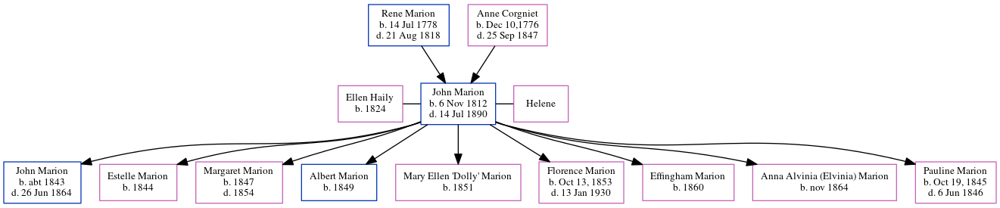

John Marion 1812 - 1890
[ Home ] | [ Calendar ] | [ Surnames Index ] | [ Family History ]A confectioner: 254 king street: importer of french confectionary and toys and the child of Rene Marion (a baker) and Anne Corgniet (a tailoress), John Marion, the four times great-uncle of Michele Copp (née Phillips), was born in Charleston, South Carolina on Nov 6, 18121,2,3 and was married twice - to Ellen Haily Helene. He had 9 children: John F, Estelle, Margaret Josephine, Albert, Mary Ellen "Dolly", Florence Catherine, Effingham and Anna Alvinia (Elvinia) with Ellen; and Pauline Elizabeth with Helene.
During his life, he was living in St Michael and St Phillip, Charleston, South Carolina in 18501; and in Charleston Ward 4, Charleston, South Carolina in 18602.
He died on Jul 14, 1890 in Moultrieville, Sullivan's Island, South Carolina3 (died of Bronchial Congestion).
Parents
- Rene Yves was born on Jul 14, 1778
- Anne Marie was born in Dec 10,1776
Children
- John F was born c. 1843
- Estelle was born in 1844
- Margaret Josephine was born in 1847
- Albert was born in 1849
- Mary Ellen "Dolly" was born in 1851
- Florence Catherine was born in Oct 13, 1853
- Effingham was born in 1860
- Anna Alvinia (Elvinia) was born in Nov 1864
- Pauline Elizabeth was born in Oct 19, 1845
Citations
- 1850 United States Federal Census Online publication - Provo, UT, USA: The Generations Network, Inc., 2005.Original data - United States of America, Bureau of the Census. Seventh Census of the United States, 1850. Washington, D.C.: National Archives and Records Administration, 1850. M432,
- 1860 United States Federal Census Online publication - Provo, UT, USA: The Generations Network, Inc., 2004.Original data - United States of America, Bureau of the Census. Eighth Census of the United States, 1860. Washington, D.C.: National Archives and Records Administration, 1860. M653, 1
- South Carolina Death Records, 1821-1955 Online publication - Provo, UT, USA: The Generations Network, Inc., 2008.Original data - South Carolina. South Carolina death records. Columbia, SC, USA: South Carolina Department of Archives and History.Original data: South Carolina. South Carolina death
Family Tree
Generated by ged2site. Last updated on Jun 15, 2024